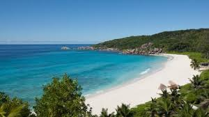
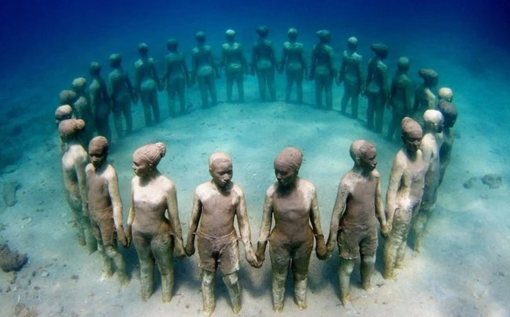
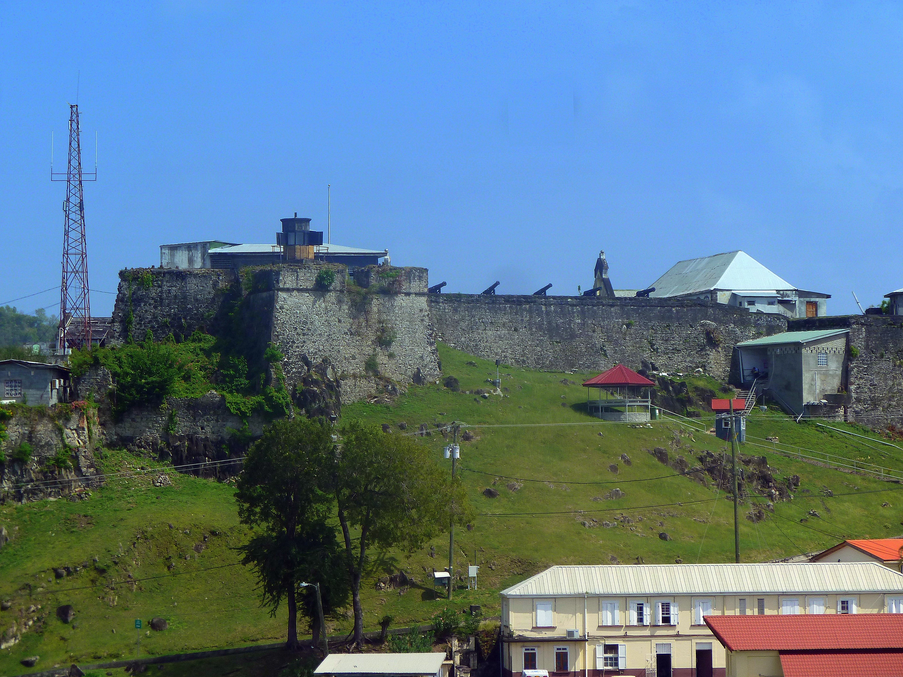

Granada
A Ilha das Especiarias

A Ilha das Especiarias
A Grand Anse Beach é uma das praias mais bonitas e mais conhecidas no mundo. Ela possui uma curta extensão de areia branca e águas azul turquesa, é bem limpa e tem águas calmas.

É o primeiro parque subaquático do mundo, foi inaugurado em 2006 e é localizado na costa de Granada na reserva marinha Molinere Beauséjour. Em 2004 o furacão Ivan destruiu muitos recifes de corais de Granada. O escultor ambientalista Jason de Caires Taylor decidiu criar o parque subaquático para ajudar a recuperação dos recifes com um plano de afastar os turistas dos recifes naturais sobreviventes e atrai-los para o parque artificial.

O Fort George é uma antiga fortificação militar erguido pelos franceses entre 1706 e 1710 sendo chamado de forte real na época, tem uma vista para a capital St George. Granada passou para o domínio britânico em 1763 e então o forte foi renomeado como o nome do monarca reinante da época, George terceiro. O forte foi então retomado pelos franceses na guerra anglo-francesa (1778-1783). E em 1974 foi entregue ao governo de granada depois da declaração de independência. Em 1979 durante uma revolução comunista foi renomeado como Forte Rupert, pai de Maurice Bishop líder da revolução, em 1983, Bishop foi executado no pátio do forte durante um golpe de estado e então o nome Fort George foi reinstaurado. O forte abrigou o quartel-general de Granada até 2024 e hoje é uma atração turística.
